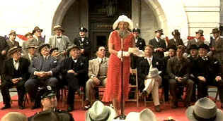

| B+,B+Legend of Bagger Vance/C-,A |
| Dreamworks/2000/127/ANA 1.85 |
The Legend of Bagger Vance opens with lush visual grace and an
entertaining narrative introduction on the golf course by old duffer Hardy Greaves, as winningly
played by Jack Lemmon. I opened my heart to this golf paean devoid of its usual cynical pumping.
Mind you, I am no fan of golf, though I can understand its magic grip over masses of hopeful
putters. But the script comes across as a perfectly raked sand trap, every grain in place without
provoking the slightest interest. If this is what golf's all about, I've got to pass. To suggest
that a golf game should stand in for life, as The Legend of Bagger Vance suggests, is little
more than a double bogey on a pitch and putt course. You may not believe this, but The Legend of
Bagger Vance makes Tin Cup, a
limp golf comedy, come across as a comparative classic.
Director Robert Redford helms The Legend of Bagger Vance with
surprisingly little feel for the excitement of a contest. The pacing is so even you could randomly
flip flop scenes without altering the overall feel of the film.
 |
| Adele introduces the great golfers
to Savannah. ©Dreamworks |
The chief virtues are the beautiful photography, the beautiful Charlize
Theron, the green, green grass and a very charming Will Smith, who, unfortunately, has little more
to do than spread a beautiful smile and slip in caddy golf/life aphorisms in between the holes. Oh
yes, there's a story too. Savannah golf darling Rannulph Junah leaves the greens for World War I
and comes back a changed man, unable to recover his swing for life. With the stock market crash and
the beginning of the depression, real estate heiress Adele Invergordon must save her dear departed
Daddy's dream of a grand Savannah resort community. Under financial duress, she comes up with
a scheme to hold a dream gold match between Bobby Jones and Walter Hagen, the reigning kings of
golf. Local boy Junah gets to walk the golf course again as a nod to local spirit. And, out of the
night, Bagger Vance appears, ready to bring Junah back to golfing respectability.
Matt Damon plays Rannulph Junah, the golfing sun of Savannah, like a two
foot putt. Theron is ice cold beautiful as Adele, but the script gives her little to sashay around
about. Young Hardy Greaves is given an inconsistent run of the course by juvenile J. Michael
Moncrief, a failure one part actor and two parts director.
If I thought golf was boring before watching The Legend of Bagger Vance,
I am yawning now. Happily, right after turning off Bagger Vance, I managed to catch Tiger
Woods walking The Masters grass to his fourth "major" victory in a row. Bobby Jones would
have been proud of Tiger, at least as portrayed in the film.
Stunning variations of red in the welcome ceremony. Check out the red of
Theron's dress, the red of the flag, the red fenders on Hagen's car, the red of the wooden
platform. The green grass is none too shabby either. Man, I wish I could get my grass to look like
that. Maybe it was a special effect. Consistently outstanding sharpness with no edge enhancement.
Depth of color and scenic detail are positively three-dimensional. Very nice range of skin tones.
The night scenes pack pizzazz with a magical glitter. Blacks are rich, lustrous and detailed. This
DVD delivers one hell of a theatrical experience. You can hear the wind delicately blow every blade
of grass in the very good DTS surround sound mix. |
|
|
|


The Academy of Motion Picture Arts
Sciences and has a soft spot reserved for peers taking on the battle of the bottle. Click on the
bottle to learn more about the magic of Oscar® Formula One.

Imaging Science Foundation
The Imaging Science Foundation promotes proper standards in home theater viewing. ISF trained
technicians offer monitor calibration services to consumers. The difference in a properly
calibrated monitor can be astounding. Click on the image to find an ISF member near you.
 Mike DeLuca, New Line's head of production, is the cover interview in the current
issue. Check it out along with other savvy features of this excellent book Mike DeLuca, New Line's head of production, is the cover interview in the current
issue. Check it out along with other savvy features of this excellent book
. The online site for Film Comment Magazine
includes all the information you need to know about cinematic events sponsored by the Film Society
of Lincoln Center. The online site for Film Comment Magazine
includes all the information you need to know about cinematic events sponsored by the Film Society
of Lincoln Center.

Classic Images on classic films, featuring news, reviews, obituaries, film convention reports,
and detailed articles on film people, from the most famous to the most obscure

Truman Show/A,A-
Powered by the consummate taste and directing perfection of Peter Weir. Jim Carrey gives a
marvelous performance. Not to be missed!
|